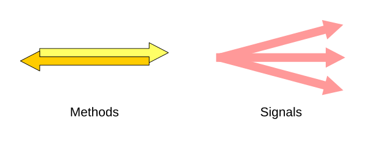
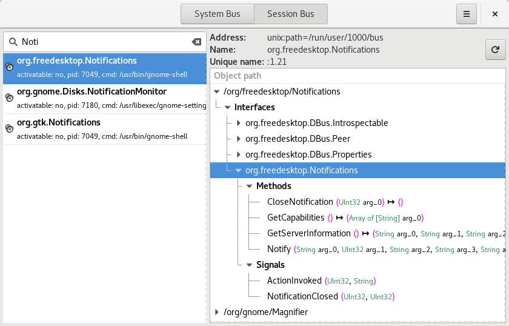
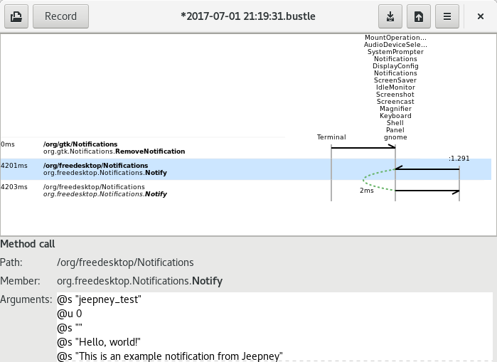

Understanding DBus
If you use desktop Linux, like I do, D-Bus is working behind the scenes to do things like storing passwords and displaying notifications - and probably many more things I'm not even aware of.
I've run into D-Bus a couple of times, and found it confusing, so I volunteered to do a short talk about it at Portsmouth LUG, forcing myself to sit down and understand it. I've come to like parts of it, and I even wrote a Python D-Bus interface called Jeepney. But it's complicated, and I haven't found an explanation I like. So this is what I think is worth understanding about D-Bus. It's not a tutorial about how to use D-Bus, but if you've copied and pasted D-Bus code from somewhere, it might help you use it better.
It's about messages
D-Bus is a framework for different programs to communicate. That means they send each other messages. Unfortunately, that simple idea gets a bit buried by the Java-inspired, non-optional object-oriented layers on top of the messages.
Guess which parts I still don't like.
There are two messaging patterns on offer:
- Method calls go to a single destination, and get a reply, which is either a method return, or an error.
- Signals are sent out to anyone who's interested, and there's no response.
That's four message types in total, including returns and errors. All four can carry data: different kinds of number, UTF-8 strings, arrays and dictionaries, and it's even possible to transfer a file descriptor in a D-Bus message.
The bus is the hub that passes messages on to the right destinations. All the other programs using D-Bus send and receive messages through the bus. You can also send messages to the bus itself, to tell it who you are or to subscribe to a signal.
There are normally two buses available: the session bus is for your login (e.g. desktop notifications), while the system bus handles system-wide stuff (e.g. USB stick plugged in).
Names, names, names
To show a desktop notification, you'll send messages to the object /org/freedesktop/Notifications, using the interface org.freedesktop.Notifications, on the bus name org.freedesktop.Notifications. Ugh. Why so many names?
The bus name is which program you're talking to. Each program that connects to the bus gets a unique name automatically (like :1.247). It can then claim other names, like org.freedesktop.Notifications. The bus ensures that only one program has each name. On my laptop, Gnome shell has claimed org.freedesktop.Notifications, along with many other names.
If you send a message to a bus name which isn't claimed, the bus may be able to start a program to handle it. This is called D-Bus activation, and it's governed by simple files saying which program to start for which name.
The object path refers to something inside the program which will handle the message. For notifications, there's only one object to deal with: /org/freedesktop/Notifications. But the secrets API provided by Gnome keyring, for instance, has an object for each secret stored, such as /org/freedesktop/secrets/collections/login/2.
Finally, the interface indicates which set of methods and signals are to be used with the object. There's usually only one interface that's interesting for applications, but most objects also have some standard interfaces like org.freedesktop.DBus.Introspectable, which you can use to examine the methods and signals of an object.
All these names start with reversed domain names, so people don't accidentally use the same name for different things. The examples I've given are defined by freedesktop.org. If I was defining my own D-Bus API, the names might look like io.github.takluyver.projectname.
Developer tools
There are a couple of nice tools available for investigating D-Bus:
D-Feet shows you what D-Bus objects there are on your system, the methods you can call and signals you can subscribe to. It can also execute methods and show you the results, but this feels a bit clunky.
Bustle records and shows messages being sent over D-Bus. There's also a command line tool called dbus-monitor which serves a similar purpose.
Other details
D-Bus uses Unix sockets, which are like network sockets but within one computer. Unix sockets are pretty clever in their own right. Each bus creates one Unix socket, and programs connect to it to talk to the bus.
Actually, D-Bus can also run over network sockets, or a number of other transports. Two processes can also use the protocol without a bus running. This is all in the spec, but the usual way to use D-Bus is with a bus and a Unix socket.
Comments
Comments powered by Disqus